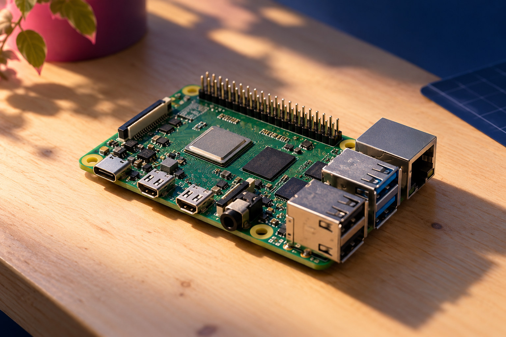

AT HOMEA helpful little
A helpful little
home hub.
Keep your smart home tools together, automate the everyday, and make your space a little more yours.
Explore Raspberry Pi projects ↗RASPBERRY PI 5 · 1GB–16GB
A real computer, ready to become your next computer, camera, home hub, robot, or whatever you can dream up.
Start with a project.
Learn as you go, build as you grow.

YOUR NEXT SIDE PROJECT, RIGHT HERE ✳
quad-core processor
display output
memory options
for hands-on making
THE POSSIBLE IS PRACTICAL
Pick a direction. Raspberry Pi 5 gives you the tools to make something useful, personal, and completely yours.
Keep your smart home tools together, automate the everyday, and make your space a little more yours.
Explore Raspberry Pi projects ↗FROM SCREEN TO SENSOR
Most computers stop at the screen. Raspberry Pi gives you a 40-pin header, camera and display connections, and a world of add-ons to bring your ideas into the real world.
PICK YOUR STARTING POINT
Same great Raspberry Pi 5. Choose the memory that fits your project, then add what you need as you go.
NO EXPERIENCE REQUIRED
Free software, friendly guides, and an enormous community make it easier to go from “I wonder…” to “I made this.”
A FEW GOOD QUESTIONS
Quick answers to help your first Raspberry Pi project start smoothly.
The board needs a USB-C power supply, a microSD card with Raspberry Pi OS, and a way to connect a screen, keyboard, and mouse for setup. A case and active cooling are useful add-ons. Check the product listing carefully: accessories are sold separately.
Yes. Connect a monitor, keyboard, and mouse, install Raspberry Pi OS, and you have a desktop computer for browsing, creating, coding, and learning. Raspberry Pi 5 can drive two 4K displays at up to 60 frames per second.
No. Start with a guided project and follow along. When you’re ready, find beginner-friendly lessons in Python, Scratch, electronics, and more.
GPIO pins let your program interact with electronic parts such as buttons, LEDs, and sensors. It’s how a computer can respond to the physical world. Add-on boards or components may be needed for specific projects.
No. Raspberry Pi 5 has a different layout and needs a compatible case. Its higher performance also benefits from active cooling during sustained heavy workloads.
YOUR IDEA IS WAITING
There’s a first step, a first line of code, a first little light that turns on. Make it yours.
Meet Raspberry Pi 5 ↗